The evidence supports continued, disciplined research on Harmattan. It does not yet support a broad training run or claims of product readiness.
Harmattan has grown from a small French-dominant experiment into a larger collection effort spanning African and francophone institutional sources. Alongside that work, Pareto has assembled benchmark protocols, training variants, and an evaluation harness. This note brings those strands together to answer a practical question: what should the next research investment prove?
Proposed decision
Reconstruct comparable baselines first. Admit more data only after quality, rights, leakage, and split checks. Then test a staged set of domain, sector, and language mixtures against retrieval and specialist-model controls.
A real collection and evaluation base
Released v2 data and recorded benchmark runs give the team a basis for reproducible follow-up.
A model that clears both gates
The reviewed variants do not demonstrate domain gains while preserving general performance.
Incremental value over controls
Training must earn its place against retrieval, specialist systems, and the existing workflow.
Data evidence: a growing inventory, not a cleared release
Three populations matter here and should not be added together as if they were unique, approved training supply: the released curated v2 set, a November documents pass, and a separately processed corpus pass. The two November passes were run separately because combined processing exceeded the available 62 GB of RAM.
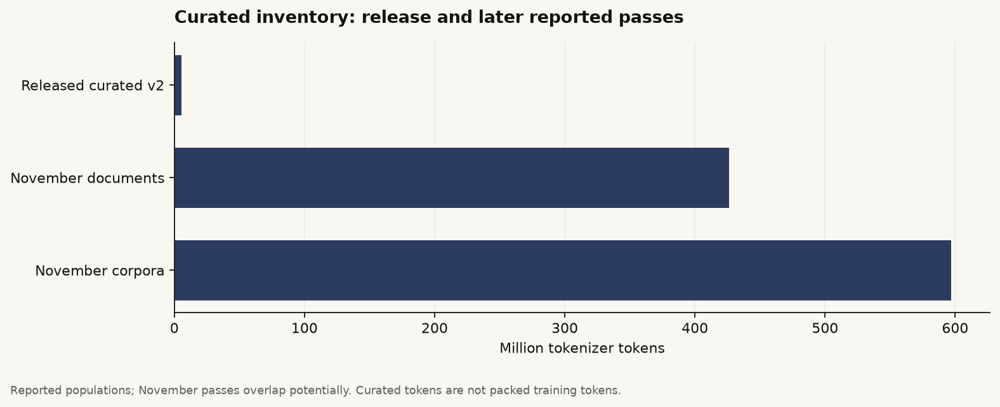
The documents pass retained 45,058 records from 76,704 inputs after filtering and deduplication. That arithmetic is internally consistent; it does not validate raw records that were unavailable for this review. The corpus pass retained another 285,540 records, all still pending in the recorded split.
Input records
Before filtering, exact duplicate removal, and fuzzy duplicate removal.
Post-filter records
The denominator used for the reported 6.37% deduplication rate.
Retained records
Across train, pending, and held-out splits in the documents pass.
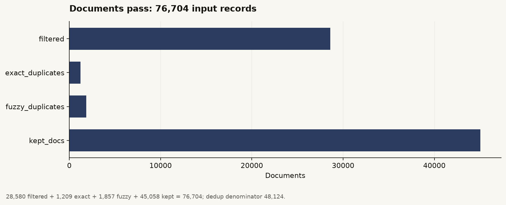
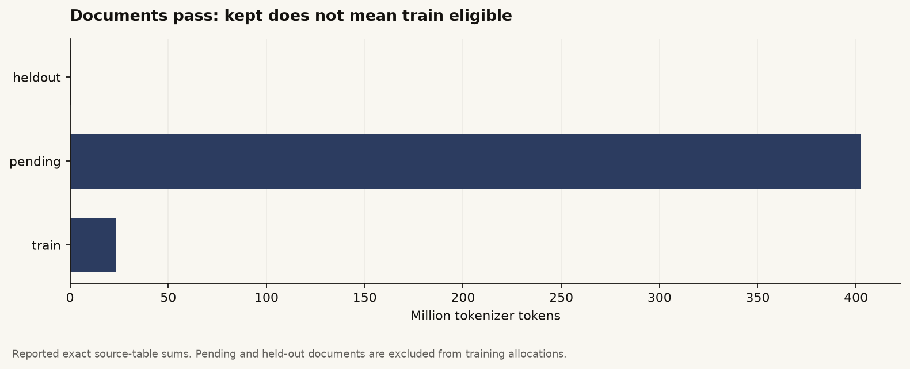
Tiering and domain coverage are still scenarios
Draft source tiers distinguish core domain narrative, lower-density statistical and procurement material, and general or education corpora. These are source labels, not training recipes, and they do not certify every document. Proposed caps produce an allocation scenario near 500M tokens; this is not a released training budget.
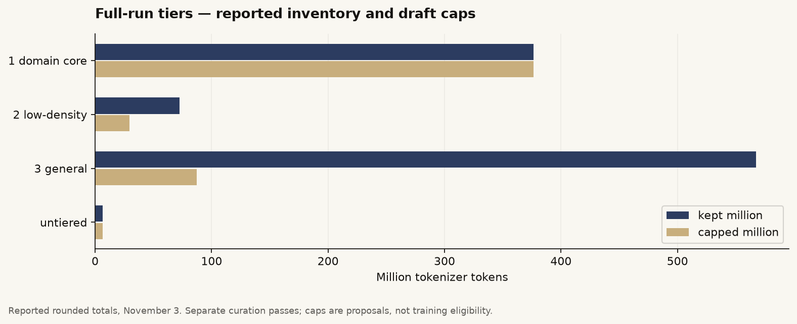
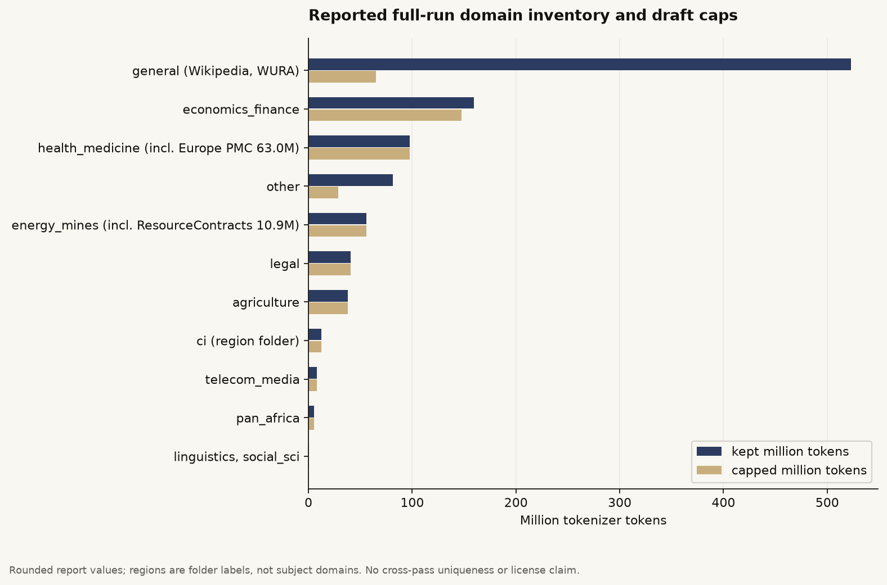
Release gate
Before expanded data is treated as a training release, the quality audit needs verdicts, cross-pass deduplication must be resolved, rights and tiers must be reviewed, validation partitions must be fixed, and packing lineage must be recorded.
Benchmark evidence: results depend on the protocol
The reference base is NVIDIA Nemotron-H-4B-Base-8K, evaluated in LLM.int8 and NF4 conditions. The 9B comparisons use Nemotron Nano 9B base or chat weights. These are historical evaluations under recorded protocols, not a newly produced common leaderboard.
| Recorded condition | MMLU | GSM8K | HumanEval | IFEval |
|---|---|---|---|---|
| 4B int8 · base prompts | 64.93 | 65.8 | 62.0 | 25.30 |
| 4B NF4 · base prompts | 48.15 | 40.0 | 44.0 | 21.10 |
| 9B Base · NF4 | 69.00 | 71.2 | 56.0 | — |
| 9B chat · NF4 · base prompts | 74.11 | 88.6 | 21.0 | 56.83 |
| 9B chat · NF4 · chat template | — | 67.2 | 92.0 | 89.93 |
Scores are percentages. GSM8K uses the first 500 items, eight shots, and strict extraction; IFEval is instruction-level strict. A dash means the report contains no comparable value. The rows are different conditions, not a controlled model comparison.
Precision and prompt format can materially change reported scores. The same 9B chat GSM8K run scored 67.2 under strict extraction and 86.2 under flexible extraction. HumanEval moved from 21 to 92 with a chat protocol while MBPP moved only from 68.2 to 68.6. These shifts are a reason to freeze evaluation conditions before drawing model-level conclusions.
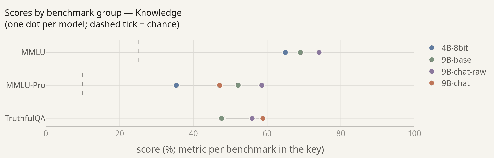
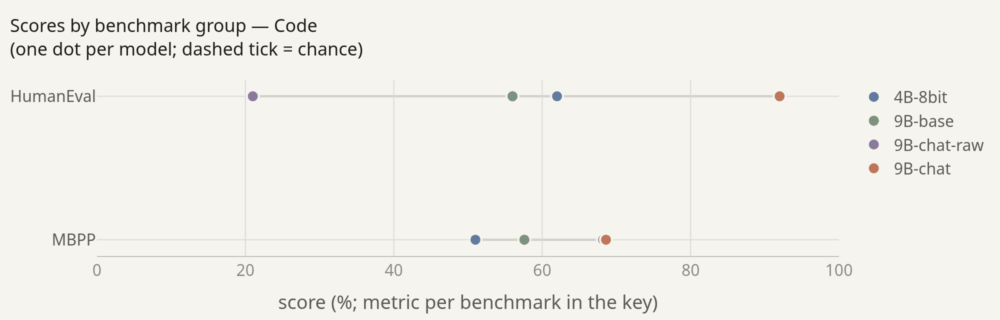
Language and domain performance point to questions, not conclusions
Recorded 4B results show a gap between English and the available African-language evaluations: about 91% versus 27% on Uhura, and 52% versus 25% on AfriMMLU. These results motivate targeted data and evaluation work. They should not be generalized to every language, task, or current model.
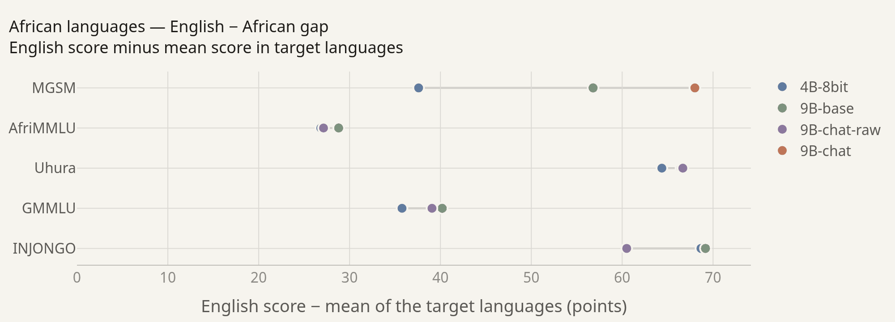
The domain-QA review also separates a model’s closed-book answer from a supplied-context answer and from recall of facts seen in training. Supplied context can raise a score, but that is not evidence that a retrieval system is implemented or useful; a retrieval control still needs to be built and measured.
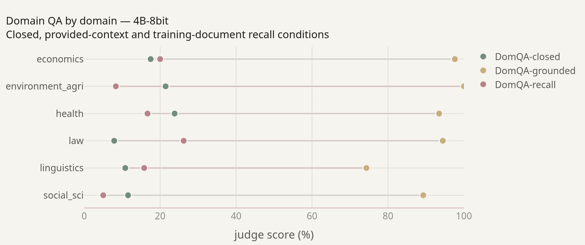
Training evidence: lower loss is not enough
The early synthetic-data recipe increased recall on training facts, but it did not meet the unseen-document domain gate and could reduce general performance. Lower validation loss did not establish better question answering. Domain capability and general retention have to be measured separately, under matched conditions.
| Recorded recipe | Epochs | Replay | Steps | Final mean loss |
|---|---|---|---|---|
| v1 raw · LR 10⁻⁴ | 3 | 10% | 384 | 2.1712 |
| v1 raw · LR 2×10⁻⁴ | 3 | 10% | 384 | 2.2077 |
| v1 raw · LR 10⁻⁴ | 1 | 10% | 128 | 2.1346 |
| v1 synthetic (ABL3) · LR 10⁻⁴ | 1 | 30% | 595 | 2.1398 |
| v1 synthetic (ABL4) · LR 10⁻⁴ | 1 | 10% | 463 | 2.1448 |
| v2 raw · t1_4b_r30 | 1 | 30% | 365 | 1.5433 |
| v2 synthetic · t2_4b_r30 | 1 | 30% | 1,276 | 1.5284 |
Final mean losses reflect unequal exposure across recipes. Different releases and validation subsets prevent direct v1/v2 loss comparisons or isolated causal conclusions.
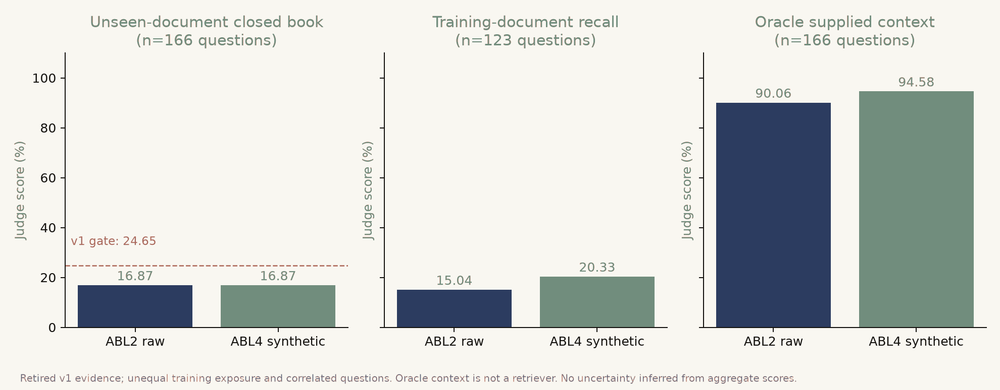
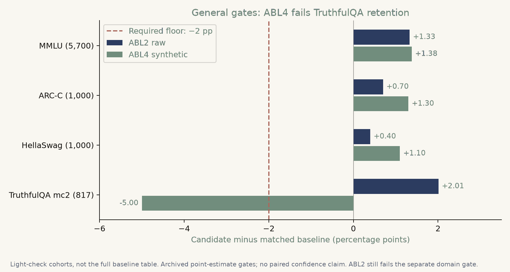
A training run is useful only if it improves the task people need, against a strong baseline, without breaking what already works.
Market hypothesis: test the workflow before the model
The proposed use case is an institutional assistant that reduces the effort of finding, comparing, and citing African sector documents in French and English, with African-language support where a real workflow warrants it. This is a hypothesis to validate, not demonstrated product demand.
Existing systems are the relevant benchmark. The review considered African-language models including Lelapa Vulavula, InkubaLM, Lugha-Llama, Tiny Aya Earth, and MORENA 1.5B, as well as general models paired with retrieval. No common-protocol comparison with Harmattan is available in this evidence set, so published scores across different protocols should not be treated as a shared leaderboard. Policy interest in African-centered AI is also not evidence of customer budgets or procurement demand.
A proposed demand test
- Discovery: interview 12 users, budget owners, and deployment or security staff. Continue only if at least three independent organizations identify the same recurring task and an accountable budget owner.
- Design partners: recruit three organizations willing to contribute permitted documents, task examples, and staff time under a written scope. Interviews and unpriced interest are not revenue.
- Offline task study: test at least 100 representative unseen tasks with two blind assessors. Target at least 20% lower median task time without quality loss against the current process, search-only, and a base model plus retrieval.
- Paid pilot: secure at least one signed paid-pilot agreement. Without it, willingness to pay remains unproven, even if benchmark performance improves.
Proposed quality targets · require owner approval before study
At least 95% valid citation support among answered tasks, no observed critical unsupported recommendation, and at least 80% coverage of answerable tasks. Quality and coverage must both hold so an always-abstain system cannot appear successful.
A phased research plan
The plan buys down uncertainty in sequence: first make the existing evidence reproducible, then test whether additional data breadth creates measurable gains beyond strong alternatives.
Reconstruct the v2 bridge
Reproduce the packed v2 release from its manifest and commit, with rank 32, sequence length 2,048, accumulation 4, and seed 1234. Evaluate the compatible unadapted base first, then compare raw-plus-replay against raw-plus-synthetic-plus-replay at matched token exposure.
Exit when: an independent setup reproduces the run, complete baselines exist, and leakage checks pass.
Test breadth, mix, and answerability
Use a 10M / 30M / 100M distinct-domain-token ladder on 4B with nested reproducible samples and a frozen evaluation version. Compare broader domain text, a West African sector focus, and a domain-plus-language mix against base-plus-retrieval and a legally eligible specialist model.
Advance only when: a declared development objective improves without general-gate failures, then confirm on untouched data across all seeds. Report negative results when retrieval wins or training adds no defensible value.
The evaluation contract already records model adapters, CPU merges into bf16, LLM.int8 evaluation copies, suite routing, domain-QA judging, loss, timings, and scorecards. Proposed extensions add run IDs, artifact hashes, precision, recipe shares, judge and rubric versions, and document-cluster-aware bootstrap intervals. If an interval crosses a gate, the result remains inconclusive even when its point estimate passes.
What this note does not claim
The underlying analysis includes 16 reproducible graphs; this summary surfaces the figures most relevant to the proposed decision. No model was trained for this edition, and no paid evaluation or customer study was conducted. Missing raw data, rights decisions, and proposed experiments remain unresolved.
Status and evidence boundary
“Completed” means an artifact or recorded run exists; it does not certify deployment readiness. The November inventory is not an audited, globally deduplicated release. The market thresholds and proposed experiments are not measured results. No revenue or product-market fit is established by this repository snapshot.
The underlying review is anchored to repository snapshot de9be87, with external sources checked on 5 November 2026. It is not external investor endorsement or an investment recommendation.
Cite the research note
Pareto Labs is preparing the full paper for public release. We will add the arXiv and Hugging Face Papers records here once they are live.
Full paper forthcoming. There is no public arXiv or Hugging Face Papers link yet. Please cite this web summary only if that is the version you used.
The next milestone is not a bigger run. It is a result the team can reproduce, compare fairly, and connect to a real user outcome.
The proposed sequence is evidence-led: resolve data lineage and missing inputs; clear data and rights requirements; preregister allocations and evaluation; then test whether training delivers value beyond retrieval and specialist alternatives.